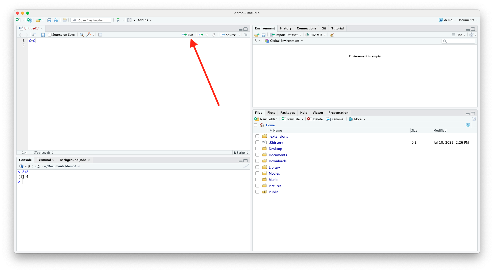

R Basics
Luc Clair
University of Winnipeg | GECON 7201
Preliminaries
Software
By now, you should have intalled the following software:
- R (the programming language)
- RStudio (the interface to work with R)
Introduction
What is R?
- R is an open-source programming language and software environment designed for statistical computing, data analysis, and graphical visualization
- Offers a wide range of statistical techniques
- Provides extensive data visualization capabilities with high-quality graphics
- Supports data manipulation, cleaning, and transformation
What is R? (cont.)
Highly extensible through packages
- There are over 20,000 packages available via CRAN (Comprehensive R Archive Network)
- Users can create their own custom functions and packages
- Frequent updates and contributions from statisticians and data scientists
- Large and active community with extensive documentation, tutorials, and forums
Community-Driven Ecosystem
The strength and flexibility of R largely come from its vast package ecosystem
R packages are collections of functions, data sets, and documentation bundled together to extend the functionality of base R
- R consists of base R and user-contributed packages
- Base R is the collection of core functions that are installed by default (e.g.,
stats,graphics, andutils)
Using R in R Studio
R Studio Interface
Source Code Editor
- Edit our R scripts

Console
- Where the code runs and results are presented
Console (cont.)
It acts as the direct interface between the user and the R interpreter
- Commands entered here are run immediately
- Common uses include:
- Typing and running quick commands or code snippets
- Viewing outputs, results, and error messages
- Debugging or testing parts of your code
- Re-run code by using the up and down keys to scroll through history
Environment
- View objects and their structure (e.g., vectors, data frames, functions)

Environment (cont.)
- Remove them with the “broom” icon or with
rm()
- Inspect variable contents by clicking on them
Files/Plots/Packages/Help
- Browse files, view plots, install/view packages, browse help files

Set Working Directory
- The working directory in R is the default folder where R looks for files to read, and where it saves files you write, unless you specify a different path
- Common commands
| Command | Purpose |
|---|---|
getwd() |
Get the current working directory |
s etwd("path/to/folder") |
Set a new working directory |
list.files() |
List files in the current working directory |
Set Working Directory (cont.)
- The working directory is shown at the top of the Console pane
- You can change it via:
- Session>Set Working Directory
Set Working Directory (cont.)
Set Working Directory (cont.)
- Use RStudio Projects, which set the working directory automatically to the project root
R Scripts
R Scripts
- Code in a console is temporary
- Code in R scripts is written and saved for reuse
- Avoid running only from console
- This makes your code reproducible and easier to update
- To open an R script press File>New Rd Document
- Use meaningful script names, e.g.,
regression_analysis.R,clean_data.R
Writing and Running R Code (cont.)
- Use
Ctrl+Enter(orCmdon Mac) to run a line of code

Writing and Running R Code (cont.)
- Alternatively, you can press the
 button at the top of the source window
button at the top of the source window
 button at the top of the source window
button at the top of the source window
Running Multiple lines of Code
- Highlight lines of code you want to run, then use
Ctrl+Enteror press the button
button
- If you want to run entire code script, press
 at the top of the source window.
at the top of the source window.
 at the top of the source window.
at the top of the source window.R Packages
What Are R Packages?
A package is a collection of:
- Functions
- Data
- Documentation
- Packages extend the capabilities of base R
What’s Inside a Package?
- R functions written and grouped around a theme
- Optional:
- Sample datasets
- Vignettes (usage tutorials)
- Documentation you can access with
?function_name
Install/Load R Packages
- R’s ecosystem is community-driven
- Most packages are user-written and publicly shared
- Use
install.packages()to install,library()to load - View and manage packages in RStudio’s Packages tab
- Can also access functions using
package_name::function()syntax
Arithmetic Operators
Arithmetic Operators
- R can perform all standard mathematical operations
| Operator | Description |
|---|---|
+ |
Addition |
- |
Subtraction |
* |
Multiplication |
/ |
Division |
^ or ** |
Exponentiation |
%% |
Modulo (remainder) |
%/% |
Integer division (quotient) |
Arithmetic Examples
Order of Operations
- R follows BEDMAS (Brackets, Exponents, Division, Multiplication, Addition, Subtraction) for evaluating mathematical expressions
Logical Operators
Logical Operators
- Logical operators are used to compare values, filter data, and control the flow of code based on logical conditions
Logical Operators (cont.)
| Operator | Meaning | Example | Result |
|---|---|---|---|
== |
Equal to | 5 == 5 |
TRUE |
!= |
Not equal to | 5 != 3 |
TRUE |
< |
Less than | 3 < 5 |
TRUE |
<= |
Less than or equal to | 5 <= 5 |
TRUE |
> |
Greater than | 7 > 4 |
TRUE |
>= |
Greater than or equal to | 4 >= 4 |
TRUE |
Boolean Operators
- Boolean operators are logical operators that work with Boolean values, i.e., values that are either
TRUEorFALSE
- They allow you to combine, invert, or compare logical conditions in programming
- In R, Boolean operators are essential for:
- Filtering data
- Creating conditional logic
- Controlling program flow (e.g., in
ifstatements)
Boolean Operators (cont.)
| Operator | Name | Description |
|---|---|---|
! |
NOT | Reverses a logical value (TRUE ⇄ FALSE) |
& |
AND (vectorized) | TRUE only if both conditions are TRUE |
| |
OR (vectorized) | TRUE if either condition is TRUE |
&& |
AND (first element only) | Evaluates only the first element |
| ` | OR (first element only) | Evaluates only the first element |
Boolean Operators (cont.)
- E.g.,
Negation: !
- We use
!as a short hand for negation
- This will come in very handy when we start altering data objects based on non-missing (i.e. non-NA) observations
Value Matching: %in%
- To see whether an object is contained within (i.e. matches one of) a list of items, use
%in%
Order of Precedence
- Logical operators (
>,==, etc) are evaluated before Boolean operators (& and |)
- Be explicit about each component of your logic statement(s)
Assignment
Assignment
- Assignment refers to the creation of a new object, e.g., variable, vector, matrix, data frame, or function
- In R, we can use either
<-or=to handle assignment
<-is normally read aloud as “gets”
Assignment (cont.)
- Note that when a variable is created, it appears in the environment tab in RStudio
- Of course, an arrow can point in the other direction, too (i.e.,
->), though it is less common
Assignment (cont.)
- You can also use
=for assignment
- Most R users seem top prefer
<-for assignment, since=also has specific role for evaluation within functions
- Use whichever you prefer, just be consistent
Variable Names
- A variable name must start with a letter and can be a combination of letters, digits, period(.) and underscore(_)
- A variable name cannot start with a number or underscore
- Reserved words cannot be used as variables (see here for a full list)
- Best not to use semi-reserved words either (words that can be over-written, but best not to, e.g.,
pi=2)
Vectors
Creating a Vector
- Vectors are the most basic data structure in R, and they are essential for data manipulation, mathematical operations, and regression analysis
- Vectors are created using
c()
Creating a Vector (cont.)
Types of vectors:
- Numeric:
c(1.5, 2.8) - Integer:
c(1L, 2L)(theLdenotes integers) - Character:
c("apple", "banana") - Logical:
c(TRUE, FALSE, TRUE)
- Numeric:
- All elements of a vector must be the same type
Sequential Values
- To generate a variable as a sequence between two numbers, use
:between the numbers or useseq()
Repeated Values
- For repeating values, we can use
rep()
Vector Operations
- Arithmetic operations are performed element-wise
Vector Operations (cont.)
- Operations with another vector (must be the same length)
Useful Vector Functions
| Function(s) | Description |
|---|---|
length(x) |
Number of elements |
sum(x) |
Total sum |
mean(x), median(x) |
Average, middle value |
var(x), sd(x) |
Variance and standard deviation |
min(x), max(x) |
Extremes |
sort(x), rank(x) |
Sorting and ranking |
which(x > 15) |
Indices where condition is true |
any(x > 10), all(x > 10) |
Logical checks |
Data Frames
Data Frames
- A data frame is one of the most commonly used data structures in R for storing and analyzing tabular data (like spreadsheets or datasets)
- Two dimensional (rows and columns)
- Columns = variables, rows = observations
- Each column is a vector (can be numeric, character, logic, etc.)
- Each column can have a different data type, unlike matrices
Creating a Data Frame
- Data frames are created using the
data.frame()command
Accessing Data
- To refer to a variable within a data fame by column name, use the
df$varnamesyntax, e.g.,
Add Variables to Data Frame
- To add a variable use the
df$varnamesyntax and assign the variable values, e.g.,
Useful Functions
| Function | Description |
|---|---|
str(df) |
Structure of the data frame |
summary(df) |
Summary statistics |
head(df) |
First 6 rows |
nrow(df) |
Number of rows |
ncol(df) |
Number of columns |
names(df) |
Column names |
df$varname |
Access a column |
subset(df, age > 25) |
Filter rows |
Matrices and Arrays
Matrices
- Matrices are two-dimensional data structures that are essential for representing equations, systems of linear equations, and matrix algebra
- To create a matrix in R, use the
matrix()function
Matrix Operations
- Element-wise operations
- Matrix multiplication is denoted by
%*%
Matrix Operations (cont.)
- Transpose
t()
- Inverse (for square matrices), use
solve()
Matrix Operations (cont.)
- Determinant
det()
- Diagonal matrix
diag()
Converting Data Frames to Matrices
- Use
as.matrix()when you need to perform numerical matrix operations or use functions that require matrix inputs
- Important note: Data frames can hold different variable types, matrices cannot
- Check the structure of a data frame using
str()
Reading and Writing Data
Reading and Writing Data
- R is capable of reading data from numerous file types and writing data to numerous file types
Reading R Data
- R data is stored as
.RDataor.rdafiles
- Use
load()to open a file that contains saved R objects (e.g., data frames, vectors, models)
- After loading, the objects appear in your environment
Opening a .csv File
- Use
read.csv()(comma-separated) orread.table()(more general)
Opening Excel, Stata, SPSS, or SAS Files
- These require external packages
- Excel (
.xlsx,.xls) requires:readxl(does not need Excel installed)
Opening Excel, Stata, SPSS, or SAS Files (cont.)
- Importing Stata (
.dta), SPSS (.sav), and SAS (.sas7bdat) data into R requires thehavenpackage
Saving a Data Frame as .RData
- Use
save()to save one or more R objects
Saving a Data Frame as .csv
- Use
write.csv()
Saving a Data Frame as Excel (.xlsx)
- Requires
writexloropenxlsx
Saving a Data Frame as Stata, SPSS, or SAS
- Requires
haven
Summary Table
| Format | Read Function | Write Function | Package Required |
|---|---|---|---|
.RData |
load (" file.RData") |
sa ve (d f, file = ...) |
Base R |
.csv |
read.c sv ("file.csv") |
write.c sv (d f, file = ...) |
Base R |
| Excel | read_excel() |
write_xlsx() |
readxl, writexl |
| Stata | read_dta() |
write_dta() |
haven |
| SPSS | read_sav() |
write_sav() |
haven |
| SAS | read_sas() |
write_sas() |
haven |
Indexing
Indexing
- Indexing: the process of accessing, extracting, or modifying elements within data structures like vectors, matrices, lists, and data frames
- Allows for selecting variables or observations (e.g., filter rows by condition)
- Enables subsetting data before running models
Indexing Syntax
- Basic syntax is
object[rows,columns]
- For 1D objects (e.g., vectors):
x[i]gives the ith object in the vector - For 2D objects (e.g., matrices and data frames):
df[row, col] - Indexing is 1-based in R (first element is
x[1])
Indexing Vectors
Indexing Matrices
- The Syntax
df[i,j]will select the element in the ith row of the jth column
- To isolate the ith row, simply use
df[i,]
- To isolate the jth column, use
df[,j]
Indexing Matrices (cont.)
- E.g.,
Indexing Data Frames
Basic Graphics
Base Plotting
The
plot()function is a versatile command in base R for creating simple visualizations, most commonly:- Scatterplots
- Line plots
- Plots of single vectors (e.g., time series, categorical data)
Scatterplot of Two Numeric Vectors
Customize Labels and Appearance
| Argument | Description |
|---|---|
main |
Title of the plot |
xlab |
Label for \(x\)-axis |
ylab |
Label for \(y\)-axis |
xlim |
Set \(x\)-axis range |
ylim |
Set \(y\)-axis range |
col |
Color of points or lines |
pch |
Plotting character (symbol shape) |
type |
"p" for points (default), "l" for lines, "b" for both |
Customize Labels and Appearance
- E.g.,
Common Plot Types in Base R
| Plot Type | Command Example | Description |
|---|---|---|
| Histogram | hist(x) |
Distribution of a numeric variable |
| Boxplot | boxplot(x) |
Summary of distribution (median, IQR) |
| Barplot | bar p lot(table(x)) |
Frequencies of categorical values |
| Time Series | plot . ts(ts_object) |
Line plot optimized for time series |
| QQ Plot | qqnorm ( x); qqline(x) |
Compares data to a normal distribution |
| Pairs Plot | pai r s(data_frame) |
Matrix of scatterplots for multiple variables |
| Density Plot | pl o t(density(x)) |
Smoothed version of a histogram |
Conditional Statements and Loops
Control Flow Constructs
Control flow constructs are programming tools that allow your R code to:
- Make decisions
- Repeat tasks
- Branch based on conditions
- Control the order in which code executes
Conditional Statements if/else Statements
- Conditional statements allow R to make decisions and execute code selectively based on whether conditions are TRUE or FALSE
- Most common branching tools in R are
if/elsestatements
Conditional Statements if/else Statements (cont.)
Use if / else when you want your program to:
- Do one thing if a condition is met
- Do something else if it is not
Conditional Statements ifelse
- For element-wise vectorized branching, use
ifelse()
- It lets you apply element-wise logic to vectors, returning one value if a condition is TRUE, and another if it’s FALSE
- Syntax:
ifelse(test, yes, no)test: A logical statementyes: Value of return iftestisTRUEno: Value iftestisFALSE
Conditional Statements ifelse (cont.)
- E.g.,
Loops
- A
forloop in R is used to repeat a block of code for each value in a sequence
- It’s a fundamental tool for automating repetitive tasks, especially in simulations, computations, or row-wise operations
Loops (cont.)
- E.g.,
Functions
Functions
- A function in R is a block of code designed to perform a specific task
- Functions allow you to reuse code, simplify your scripts, and make your analysis more modular and readable
- Keep functions short and focused, should perform one task
Writing Functions
- Use the
function()command
Fuctions Example
Global Environment
Global Environment
The global environment is the main workspace in R where all your user-defined objects are stored during a session
- Variables
- Data frames
- Functions
- Models
- In RStudio, we observe the global environment in the Environment tab
Global Environment (cont.)
- Important: Variables stored inside a data frame (e.g.,
d$x) are not the same as variables in the global environment (e.g.,x)
- Even if a data frame is in the global environment, its columns are accessible only through the data frame itself, not as independent variables, unless they are also explicitly assigned to the global environment
Accessing Variables in a Data Frame
- We have to specify that
xbelongs todf
- As above we can dollar sign operator
$, i.e.,df$x
- Alternatively, we can use
with(), e.g.,with(df, mean(x))
- If we are using a single data frame we can attach the dataset using
attach()
Removing Objects from the Global Environment
- If we want to remove an object from the environment, we can use the
rm()command
- To delete all objects, use
rm(list=ls())
Good Coding Practices
Good Coding Practices
- Following consistent coding practices makes your code easier to read, debug, and share
Variable Names
- Use clear, descriptive variable names
- Use lowercase letters with underscores
- Avoid short, vague names like
x1,tmp, ordf1 - Use names that reflect the content or purpose of the variable
Variable Names (cont.)
- Avoid hardcoding values in multiple places
- Assign values to a variable and reuse
Command Line
- Keep code clean and readable by avoiding long, crowded lines
- Spaces before and after operators
+,-,*,/,==,<,>=, etc - Improves visual structure and reduces errors during review or collaboration
Command Line (cont.)
| Good Practice | Poor Practice |
|---|---|
One Line per Argument
- Use one line per argument in long functions
- For readability, especially with functions like
plot()orlm()
Use Comments
- Use
#to describe what your code is doing
- Keep comments concise and helpful
Use Comments (cont.)
- To write multiple lines of comments, use
#>
Use Comments
- Use sectioning comments to break up files into manageable pieces
- RStudio provides a keyboard shortcut to create these headers
Cmd/Ctrl+Shift+R
- Makes it easy to navigate through code
Help
Help
- For more information on a (named) function or object in R, consult the “help” documentation
- Or, more simply, just use
?